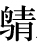

范睢 者，魏 人也，字叔 。游说诸侯，欲事魏王 ，家贫无以自资，乃先事魏 中大夫须贾 。
须贾 为魏昭王 使于齐 ，范睢 从。留数月，未得报。齐襄 王闻睢 辩口，乃使人赐睢 金十斤及牛酒，睢 辞谢不敢受。须贾 知之，大怒，以为睢 持魏国 阴事告齐 ，故得此馈，令睢 受其牛酒，还其金。既归，心怒睢 ，以告魏 相。魏 相，魏 之诸公子，曰魏齐 。魏齐 大怒，使舍人笞击睢 ，折胁摺齿。睢 详死，即卷以箦，置厕中。宾客饮者醉，更溺睢 ，故僇辱以惩后，令无妄言者。睢 从箦中谓守者曰：“公能出我，我必厚谢公。”守者乃请出弃箦中死人。魏齐 醉，曰：“可矣。”范睢 得出。后魏齐 悔，复召求之。魏 人郑安平 闻之，乃遂操范睢 亡，伏匿，更名姓曰张禄 。
当此时，秦昭王 使谒者王稽 于魏 。郑安平 诈为卒，侍王稽 。王稽 问：“魏 有贤人可与俱西游者乎？”郑安平 曰：“臣里中有张禄先生 ，欲见君言天下事。其人有仇，不敢昼见。”王稽 曰：“夜与俱来。”郑安平 夜与张禄 见王稽 。语未究，王稽 知范睢 贤，谓曰：“先生待我于三亭 之南。”与私约而去。
王稽 辞魏 去，过载范睢 入秦 。至湖 ，望见车骑从西来。范睢 曰：“彼来者为谁？”王稽 曰：“秦 相穰侯 东行县邑。”范睢 曰：“吾闻穰侯 专秦 权，恶内诸侯客，此恐辱我，我宁且匿车中。”有顷，穰侯 果至，劳王稽 ，因立车而语曰：“关东 有何变？”曰：“无有。”又谓王稽 曰：“谒君得无与诸侯客子俱来乎？无益，徒乱人国耳。”王稽 曰：“不敢。”即别去。范睢 曰：“吾闻穰侯 智士也，其见事迟，乡者疑车中有人，忘索之。”于是范睢 下车走，曰：“此必悔之。”行十馀里，果使骑还索车中，无客，乃已。王稽 遂与范睢 入咸阳 。
已报使，因言曰：“魏 有张禄先生 ，天下辩士也。曰‘秦王 之国危于累卵，得臣则安。然不可以书传也’。臣故载来。”秦王 弗信，使舍食草具。待命岁馀。
当是时，昭王
已立三十六年。南拔楚
之鄢郢
，楚怀王
幽死于秦
。秦
东
破齐
。湣王
尝称帝，后去之。数困三晋
。厌天下辩士，无所信。
穰侯 ，华阳君 ，昭王 母宣太后 之弟也；而泾阳君 、高陵君 皆昭王 同母弟也。穰侯 相，三人者更将，有封邑，以太后故，私家富重于王室。及穰侯 为秦 将，且欲越韩 、魏 而伐齐纲寿 ，欲以广其陶 封。范睢 乃上书曰：
臣闻明主立政，有功者不得不赏，有能者不得不官，劳大者其禄厚，功多者其爵尊，能治众者其官大。故无能者不敢当职焉，有能者亦不得蔽隐。使以臣之言为可，愿行而益利其道；以臣之言为不可，久留臣无为也。语曰：“庸主赏所爱而罚所恶；明主则不然，赏必加于有功，而刑必断于有罪。”今臣之胸不足以当椹质，而腰不足以待斧钺，岂敢以疑事尝试于王哉！虽以臣为贱人而轻辱，独不重任臣者之无反复于王邪？
且臣闻周 有砥砨，宋 有结绿，梁 有县藜，楚 有和 朴，此四宝者，土之所生，良工之所失也，而为天下名器。然则圣王之所弃者，独不足以厚国家乎？
臣闻善厚家者取之于国，善厚国者取之于诸侯。天下有明主则诸侯不得擅厚者，何也？为其割荣也。良医知病人之死生，而圣主明于成败之事，利则行之，害则舍之，疑则少尝之，虽舜禹 复生，弗能改已。语之至者，臣不敢载之于书，其浅者又不足听也。意者臣愚而不概于王心邪？亡其言臣者贱而不可用乎？自非然者，臣愿得少赐游观之间，望见颜色。一语无效，请伏斧质。
于是秦昭王 大说，乃谢王稽 ，使以传车召范睢 。
于是范睢 乃得见于离宫，详为不知永巷而入其中。王来，而宦者怒逐之，曰：“王至！”范睢 缪为曰：“秦 安得王？秦 独有太后、穰侯 耳。”欲以感怒昭王 。昭王 至，闻其与宦者争言，遂延迎，谢曰：“寡人宜以身受命久矣，会义渠 之事急，寡人旦暮自请太后；今义渠 之事已，寡人乃得受命。窃闵然不敏，敬执宾主之礼。”范睢 辞让。是日观范睢 之见者，群臣莫不洒然变色易容者。
秦王 屏左右，宫中虚无人。秦王 跽而请曰：“先生何以幸教寡人？”范睢 曰：“唯唯。”有间，秦王 复跽而请曰：“先生何以幸教寡人？”范睢 曰：“唯唯。”若是者三。秦王 跽曰：“先生卒不幸教寡人邪？”范睢 曰：“非敢然也。臣闻昔者吕尚 之遇文王 也，身为渔父而钓于渭 滨耳。若是者，交疏也。已说而立为太师，载与俱归者，其言深也。故文王 遂收功于吕尚 而卒王天 下。乡使文王 疏吕尚 而不与深言，是周 无天子之德，而文武 无与成其王业也。今臣羁旅之臣也，交疏于王，而所愿陈者皆匡君之事，处人骨肉之间，愿效愚忠而未知王之心也。此所以王三问而不敢对者也。臣非有畏而不敢言也。臣知今日言之于前而明日伏诛于后，然臣不敢避也。大王信行臣之言，死不足以为臣患，亡不足以为臣忧，漆身为厉、被发为狂不足以为臣耻。且以五帝 之圣焉而死，三王 之仁焉而死，五伯 之贤焉而死，乌获 、任鄙 之力焉而死，成荆 、孟贲 、王庆忌 、夏育 之勇焉而死。死者，人之所必不免也。处必然之势，可以少有补于秦 ，此臣之所大愿也，臣又何患哉！伍子胥 橐载而出昭关 ，夜行昼伏，至于陵水 ，无以糊其口，膝行蒲伏，稽首肉袒，鼓腹吹篪，乞食于吴 市，卒兴吴国 ，阖闾 为伯。使臣得尽谋如伍子胥 ，加之以幽囚，终身不复见，是臣之说行也，臣又何忧？箕子 、接舆 漆身为厉，被发为狂，无益于主。假使臣得同行于箕子 ，可以有补于所贤之主，是臣之大荣也，臣有何耻？臣之所恐者，独恐臣死之后，天下见臣之尽忠而身死，因以是杜口裹足，莫肯向秦 耳。足下上畏太后之严，下惑于奸臣之态，居深宫之中，不离阿保之手，终身迷惑，无与昭奸。大者宗庙灭覆，小者身以孤危，此臣之所恐耳。若夫穷辱之事，死亡之患，臣不敢畏也。臣死而秦 治，是臣死贤于生。”秦王 跽曰：“先生是何言也！夫秦国 辟远，寡人愚不肖，先生乃幸辱至于此，是天以寡人恩先生而存先王之宗庙也。寡人得受命于先生，是天所以幸先王，而不弃其孤也。先生奈何而言若是！事无小大，上及太后，下至大臣，愿先生悉以教寡人，无疑寡人也。”范睢 拜，秦王 亦拜。
范睢 曰：“大王之国，四塞以为固，北有甘泉 、谷口 ，南带泾 、渭 ，右陇 、蜀 ，左关 、阪 ，奋击百万，战车千乘，利则出攻，不利则入守，此王者之地也。民怯于私斗而勇于公战，此王者之民也。王并此二者而有之。夫以秦 卒之勇，车骑之众，以治诸侯，譬若施韩 卢而搏蹇兔也，霸王之业可致也，而群臣莫当其位。至今闭关十五年，不敢窥兵于山 东者，是穰侯 为秦 谋不忠，而大王之计有所失也。”秦王 跽曰：“寡人愿闻失计。”
然左右多窃听者，范睢 恐，未敢言内，先言外事，以观秦王 之俯仰。因进曰：“夫穰侯 越韩 、魏 而攻齐纲 、寿 ，非计也。少出师则不足以伤齐 ，多出师则害于秦 。臣意王之计，欲少出师而悉韩 、魏 之兵也，则不义矣。今见与国之不亲也，越人之国而攻，可乎？其于计疏矣。且昔齐湣王 南攻楚 ，破军杀将，再辟地千里，而齐 尺寸之地无得焉者，岂不欲得地哉，形势不能有也。诸侯见齐 之罢弊，君臣之不和也，兴兵而伐齐 ，大破之。士辱兵顿， 皆咎其王，曰：‘谁为此计者乎？’王曰：‘文子 为之。’大臣作乱，文子 出走。故齐 所以大破者，以其伐楚 而肥韩 、魏 也。此所谓借贼兵而赍盗粮者也。王不如远交而近攻，得寸则王之寸也，得尺亦王之尺也。今释此而远攻，不亦缪乎！且昔者中山 之国地方五百里，赵 独吞之，功成名立而利附焉，天下莫之能害也。今夫韩 、魏 ，中国之处而天下之枢也，王其欲霸，必亲中国以为天下枢，以威楚 、赵 。楚 强则附赵 ，赵 强则附楚 ，楚 、赵 皆附，齐 必惧矣。齐 惧，必卑辞重币以事秦 。齐 附而韩 、魏 因可虏也。”昭王 曰：“吾欲亲魏 久矣，而魏 多变之国也，寡人不能亲。请问亲魏 奈何？”对曰：“王卑词重币以事之；不可，则割地而赂之；不可，因举兵而伐之。”王曰：“寡人敬闻命矣。”乃拜范睢 为客卿，谋兵事。卒听范睢 谋，使五大夫绾 伐魏 ，拔怀 。后二岁，拔邢丘 。
客卿范睢
复说昭王
曰：“秦韩
之地形，相错如绣。秦
之有韩
也，譬如木之有蠹也，人之有心腹之病也。天下无变则已，天下有变，其为秦
患者孰大于韩
乎？王不如收韩
。”昭王
曰：“吾固欲收韩
，韩
不听，为之奈何？”对曰：“韩
安得无听乎？王下兵而攻荥阳
，则巩
、成皋
之道不通；北断太行
之道，则上党
之师不下。王一兴兵而攻荥阳
，则其国断而为三。夫韩
见必亡，安得不听乎？若韩
听，而霸事因可虑矣。”王曰：“善。”且欲发使于韩
。
范睢 日益亲，复说用数年矣，因请间说曰：“臣居山东 时，闻齐 之有田文 ，不闻其有王也；闻秦 之有太后、穰侯 、华阳 、高陵 、泾阳 ，不闻其有王也。夫擅国之谓王，能利害之谓王，制杀生之威之谓王。今太后擅行不顾，穰侯 出使不报，华阳 、泾阳 等击断无讳，高陵 进退不请。四贵备而国不危者，未之有也。为此四贵者下，乃所谓无王也。然则权安得不倾，令安得从王出乎？臣闻善治国者，乃内固其威而外重其权。穰侯 使者操王之重，决制于诸侯，剖符于天下，政適伐国，莫敢不听。战胜攻取则利归于陶 ，国弊御于诸侯；战败则结怨于百姓，而祸归于社稷。诗曰‘木实繁者披其枝，披其枝者伤其心；大其都者危其国，尊其臣者卑其主’。崔杼 、淖齿 管齐 ，射王股，擢王筋，悬之于庙梁，宿昔而死。李兑 管赵 ，囚主父 于沙丘 ，百日而饿死。今臣闻秦 太后、穰侯 用事，高陵 、华阳 、泾阳 佐之，卒无秦王 ，此亦淖齿 、李兑 之类也。且夫三代 所以亡国者，君专授政，纵酒驰骋弋猎，不听政事。其所授者，妒贤嫉能，御下蔽上，以成其私，不为主计，而主不觉悟，故失其国。今自有秩以上至诸大吏，下及王左右，无非相国之人者。见王独立于朝，臣窃为王恐，万世之后，有秦国 者非王子孙也。”昭王 闻之大惧， 曰：“善。”于是废太后，逐穰侯 、高陵 、华阳 、泾阳君 于关外。秦王 乃拜范睢 为相。收穰侯 之印，使归陶 ，因使县官给车牛以徙，千乘有馀。到关，关阅其宝器，宝器珍怪多于王室。
秦
封范睢
以应
，号为应侯
。当是时，秦昭王
四十一年也。
范睢 既相秦 ，秦 号曰张禄 ，而魏 不知，以为范睢 已死久矣。魏 闻秦 且东伐韩 、魏 ，魏 使须贾 于秦 。范睢 闻之，为微行，敝衣闲步之邸，见须贾 。须贾 见之而惊曰：“范叔 固无恙乎！”范睢 曰：“然。”须贾 笑曰：“范叔 有说于秦 邪？”曰：“不也。睢 前日得过于魏 相，故亡逃至此，安敢说乎！”须贾 曰：“今叔 何事？”范睢 曰：“臣为人庸赁。”须贾 意哀之，留与坐饮食，曰：“范叔 一寒如此哉！”乃取其一绨袍以赐之。须贾 因问曰：“秦 相张君 ，公知之乎？吾闻幸于王，天下之事皆决于相君。今吾事之去留在张君 。孺子岂有客习于相君者哉？”范睢 曰：“主人翁习知之。唯睢 亦得谒，睢 请为见君于张君 。”须贾 曰：“吾马病，车轴折，非大车驷马，吾固不出。”范睢 曰：“愿为君借大车驷马于主人翁。”
范睢 归取大车驷马，为须贾 御之，入秦 相府。府中望见，有识者皆避匿，须贾 怪之。至相舍门，谓须贾 曰：“待我，我为君先入通于相君。”须贾 待门下，持车良久，问门下曰：“范叔 不出，何也？”门下曰：“无范叔 。”须贾 曰：“向者与我载而入者。”门下曰：“乃吾相张君 也。”须贾 大惊，自知见卖，乃肉袒膝行，因门下人谢罪。于是范睢 盛帷帐，侍者甚众，见之。须贾 顿首言死罪，曰：“贾 不意君能自致于青云之上，贾 不敢复读天下之书，不敢复与天下之事。贾 有汤镬之罪，请自屏于胡貉之地，唯君死生之！”范睢 曰：“汝罪有几？”曰：“擢贾 之发以续贾 之罪，尚未足。”范睢 曰：“汝罪有三耳。昔者楚昭王 时而申包胥 为楚 却吴 军，楚王 封之以荆 五千户，包胥 辞不受，为丘墓之寄于荆 也。今睢 之先人丘墓亦在魏 ，公前以睢 为有外心于齐 而恶睢 于魏齐 ，公之罪一也。当魏齐 辱我于厕中，公不止，罪二也。更醉而溺我，公其何忍乎？罪三矣。然公之所以得无死者，以绨袍恋恋，有故人之意，故释公。”乃谢罢。入言之昭王 ，罢归须贾 。
须贾 辞于范睢 ，范睢 大供具，尽请诸侯使，与坐堂上，食饮甚设。而坐须贾 于堂下，置莝豆其前，令两黥徒夹而马食之。数曰：“为我告魏王 ，急持魏齐 头来！不然者，我且屠大梁 。”须贾 归，以告魏齐 。魏齐 恐，亡走赵 ，匿平原君 所。
范睢 既相，王稽 谓范睢 曰：“事有不可知者三，有不可奈何者亦三。宫 车一日晏驾，是事之不可知者一也。君卒然捐馆舍，是事之不可知者二也。使臣卒然填沟壑，是事之不可知者三也。宫车一日晏驾，君虽恨于臣，无可奈何。君卒然捐馆舍，君虽恨于臣，亦无可奈何。使臣卒然填沟壑，君虽恨于臣，亦无可奈何。”范睢 不怿，乃入言于王曰：“非王稽 之忠，莫能内臣于函谷关 ；非大王之贤圣，莫能贵臣。今臣官至于相，爵在列侯，王稽 之官尚止于谒者，非其内臣之意也。”昭王 召王稽 ，拜为河东 守，三岁不上计。又任郑安平 ，昭王 以为将军。范睢 于是散家财物，尽以报所尝困厄者。一饭之德必偿，睚眦之怨必报。
范睢 相秦 二年，秦昭王 之四十二年，东伐韩少曲 、高平 ，拔之。
秦昭王 闻魏齐 在平原君 所，欲为范睢 必报其仇，乃详为好书遗平原君 曰：“寡人闻君之高义，愿与君为布衣之友，君幸过寡人，寡人愿与君为十日之饮。”平原君 畏秦 ，且以为然，而入秦 见昭王 。昭王 与平原君 饮数日，昭王 谓平原君 曰：“昔周文王 得吕尚 以为太公，齐桓公 得管夷吾 以为仲父，今范君 亦寡人之叔父也。范君 之仇在君之家，愿使人归取其头来；不然，吾不出君于关。”平原君 曰：“贵而为交者，为贱也；富而为交者，为贫也。夫魏齐 者，胜 之友也，在，固不出也，今又不在臣所。”昭王 乃遗赵王 书曰：“王之弟在秦 ，范君 之仇魏齐 在平原君 之家。王使人疾持其头来；不然，吾举兵而伐赵 ，又不出王之弟于关。”赵孝成王 乃发卒围平原君 家，急，魏齐 夜亡出，见赵 相虞卿 。虞卿 度赵王 终不可说，乃解其相印，与魏齐 亡，间行，念诸侯莫可以急抵者，乃复走大梁 ，欲因信陵君 以走楚 。信陵君 闻之，畏秦 ，犹豫未肯见，曰：“虞卿 何如人也？”时侯嬴 在旁，曰：“人固未易知，知人亦未易也。夫虞卿 蹑 檐簦，一见赵王 ，赐白璧一双，黄金百镒；再见，拜为上卿；三见，卒受相印，封万户侯。当此之时，天下争知之。夫魏齐 穷困过虞卿 ，虞卿 不敢重爵禄之尊，解相印，捐万户侯而间行。急士之穷而归公子，公子曰‘何如人’。人固不易知，知人亦未易也！”信陵君 大惭，驾如野迎之。魏齐 闻信陵君 之初难见之，怒而自刭。赵王 闻之，卒取其头予秦 。秦昭王 乃出平原君 归赵 。
昭王 四十三年，秦 攻韩汾陉 ，拔之，因城河 上广武 。
后五年，昭王 用应侯 谋，纵反间卖赵 ，赵 以其故，令马服子 代廉颇 将。秦 大破赵 于长平 ，遂围邯郸 。已而与武安君白起 有隙，言而杀之。任郑安平 ，使击赵 。郑安平 为赵 所围，急，以兵二万人降赵 。应侯 席稿请罪。秦 之法，任人而所任不善者，各以其罪罪之。于是应侯 罪当收三族。秦昭王 恐伤应侯 之意，乃下令国中：“有敢言郑安平 事者，以其罪罪之。”而加赐相 国应侯 食物日益厚，以顺适其意。后二岁，王稽 为河东 守，与诸侯通，坐法诛。而应侯 日益以不怿。
昭王
临朝叹息，应侯
进曰：“臣闻‘主忧臣辱，主辱臣死’。今大王中朝而忧，臣敢请其罪。”昭王
曰：“吾闻楚
之铁剑利而倡优拙。夫铁剑利则士勇，倡优拙则思虑远。夫以远思虑而御勇士，吾恐楚
之图秦
也。夫物不素具，不可以应卒，今武安君
既死，而郑安平
等畔，内无良将而外多敌国，吾是以忧。”欲以激励应侯
，应侯
惧，不知所出。蔡泽
闻之，往入秦
也。
蔡泽 者，燕 人也。游学干诸侯小大甚众，不遇。而从唐举 相，曰：“吾闻先生相李兑 ，曰‘百日之内持国秉’，有之乎？”曰：“有之。”曰：“若臣者何如？”唐举 孰视而笑曰：“先生曷鼻，巨肩，魋颜，蹙齃，膝挛。吾闻圣人不相，殆先生乎？”蔡泽 知唐举 戏之，乃曰：“富贵吾所自有，吾所不知者寿也，愿闻之。”唐举 曰：“先生之寿，从今以往者四十三岁。”蔡泽 笑谢而去，谓其御者曰：“吾持粱刺齿肥，跃马疾驱，怀黄金之印，结紫绶于腰，揖让人主之前，食肉富贵，四十三年足矣。”去之赵 ，见逐。之韩 、魏 ，遇夺釜鬲于涂。闻应侯 任郑安平 、王稽 皆负重罪于秦 ，应侯 内惭，蔡泽 乃西入秦 。
将见昭王 ，使人宣言以感怒应侯 曰：“燕 客蔡泽 ，天下雄俊弘辩智士也。彼一见秦王 ，秦王 必困君而夺君之位。”应侯 闻，曰：“五帝三代 之事，百家之说，吾既知之，众口之辩，吾皆摧之，是恶能困我而夺我位乎？”使人召蔡泽 。蔡泽 入，则揖应侯 。应侯 固不快，及见之，又倨，应侯 因让之曰：“子尝宣言欲代我相秦 ，宁有之乎？”对曰：“然。”应侯 曰：“请闻其说。”蔡泽 曰：“吁，君何见之晚也！夫四时之序，成功者去。夫人生百体坚强，手足便利，耳目聪明而心圣智，岂非士之愿与？”应侯 曰：“然。”蔡泽 曰：“质仁秉义，行道施德，得志于天下，天下怀乐敬爱而尊慕之，皆愿以为君王，岂不辩智之期与？”应侯 曰：“然。”蔡泽 复曰：“富贵显荣，成理万物，使各得其所；性命寿长，终其天年而不夭伤；天下继其统，守其业，传之无穷；名实纯粹，泽流千里，世世称之而无绝，与天地终始：岂道德之符而圣人所谓吉祥善事者与？”应侯 曰：“然。”
蔡泽 曰：“若夫秦 之商君 ，楚 之吴起 ，越 之大夫种 ，其卒然亦可愿与？”应侯 知蔡泽 之欲困己以说，复谬曰：“何为不可？夫公孙鞅 之事孝公 也，极身无贰虑，尽公而不顾私；设刀锯以禁奸邪，信赏罚以致治；披腹心，示情素，蒙怨咎，欺旧友，夺魏公子卬 ，安秦 社稷，利百姓，卒为秦 禽将破敌，攘地千里。吴起 之事悼王 也，使私不得害公，谗不得蔽忠，言不取苟合，行不 取苟容，不为危易行，行义不辟难，然为霸主强国，不辞祸凶。大夫种 之事越王 也，主虽困辱，悉忠而不解，主虽绝亡，尽能而弗离，成功而弗矜，贵富而不骄怠。若此三子者，固义之至也，忠之节也。是故君子以义死难，视死如归；生而辱不如死而荣。士固有杀身以成名，唯义之所在，虽死无所恨。何为不可哉？”
蔡泽 曰：“主圣臣贤，天下之盛福也；君明臣直，国之福也；父慈子孝，夫信妻贞，家之福也。故比干 忠而不能存殷 ，子胥 智而不能完吴 ，申生 孝而晋国 乱。是皆有忠臣孝子，而国家灭乱者，何也？无明君贤父以听之，故天下以其君父为僇辱而怜其臣子。今商君 、吴起 、大夫种 之为人臣，是也；其君，非也。故世称三子致功而不见德，岂慕不遇世死乎？夫待死而后可以立忠成名，是微子 不足仁，孔子 不足圣，管仲 不足大也。夫人之立功，岂不期于成全邪？身与名俱全者，上也。名可法而身死者，其次也。名在僇辱而身全者，下也。”于是应侯 称善。
蔡泽 少得间，因曰：“夫商君 、吴起 、大夫种 ，其为人臣尽忠致功则可愿矣，闳夭 事文王 ，周公 辅成王 也，岂不亦忠圣乎？以君臣论之，商君 、吴起 、大夫种 其可愿孰与闳夭 、周公 哉？”应侯 曰：“商君 、吴起 、大夫种 弗若也。”蔡泽 曰：“然则君之主慈仁任忠，惇厚旧故，其贤智与有道之士为胶漆，义不倍功臣，孰与秦孝公 、楚悼王 、越王 乎？”应侯 曰：“未知何如也。”蔡泽 曰：“今主亲忠臣，不过秦孝公 、楚悼王 、越王 ，君之设智，能为主安危修政，治乱强兵，批患折难，广地殖谷，富国足家，强主，尊社稷，显宗庙，天下莫敢欺犯其主，主之威盖震海内，功彰万里之外，声名光辉传于千世，君孰与商君 、吴起 、大夫种 ？”应侯 曰：“不若。”蔡泽 曰：“今主之亲忠臣不忘旧故不若孝公 、悼王 、句践 ，而君之功绩爱信亲幸又不若商君 、吴起 、大夫种 ，然而君之禄位贵盛，私家之富过于三子，而身不退者，恐患之甚于三子，窃为君危之。语曰‘日中则移，月满则亏’。物盛则衰，天地之常数也。进退盈缩，与时变化，圣人之常道也。故‘国有道则仕，国无道则隐’。圣人曰‘飞龙在天，利见大人’。‘不义而富且贵，于我如浮云’。今君之怨已讎而德已报，意欲至矣，而无变计，窃为君不取也。且夫翠、鹄、犀、象，其处势非不远死也，而所以死者，惑于饵也。苏秦 、智伯 之智，非不足以辟辱远死也，而所以死者，惑于贪利不止也。是以圣人制礼节欲，取于民有度，使之以时，用之有止，故志不溢，行不骄，常与道俱而不失，故天下承而不绝。昔者齐桓公 九合诸侯，一匡天下，至于葵丘 之会，有骄矜之志，畔者九国。吴王夫差 兵无敌于天下，勇强以轻诸侯，陵齐晋 ，故遂以杀身亡国。夏育 、太 史嗷 叱呼骇三军，然而身死于庸夫。此皆乘至盛而不返道理，不居卑退处俭约之患也。夫商君 为秦孝公 明法令，禁奸本，尊爵必赏，有罪必罚，平权衡，正度量，调轻重，决裂阡陌，以静生民之业而一其俗，劝民耕农利土，一室无二事，力田蓄积，习战阵之事，是以兵动而地广，兵休而国富，故秦 无敌于天下，立威诸侯，成秦国 之业。功已成矣，而遂以车裂。楚 地方数千里，持戟百万，白起 率数万之师以与楚 战，一战举鄢郢 以烧夷陵 ，再战南并蜀汉 。又越韩 、魏 而攻强赵 ，北坑马服 ，诛屠四十馀万之众，尽之于长平 之下，流血成川，沸声若雷，遂入围邯郸 ，使秦 有帝业。楚 、赵 天下之强国而秦 之仇敌也，自是之后，楚 、赵 皆慑伏不敢攻秦 者，白起 之势也。身所服者七十馀城，功已成矣，而遂赐剑死于杜邮 。吴起 为楚悼王 立法，卑减大臣之威重，罢无能，废无用，损不急之官，塞私门之请，一楚国 之俗，禁游客之民，精耕战之士，南收杨越 ，北并陈 、蔡 ，破横散从，使驰说之士无所开其口，禁朋党以励百姓，定楚国 之政，兵震天下，威服诸侯。功已成矣，而卒枝解。大夫种 为越王 深谋远计，免会稽 之危，以亡为存，因辱为荣，垦草入邑，辟地殖谷，率四方之士，专上下之力，辅句践 之贤，报夫差 之仇，卒擒劲吴 ，令越 成霸。功已彰而信矣，句践 终负而杀之。此四子者，功成不去，祸至于此。此所谓信而不能屈，往而不能返者也。范蠡 知之，超然辟世，长为陶朱公 。君独不观夫博者乎？或欲大投，或欲分功，此皆君之所明知也。今君相秦 ，计不下席，谋不出廊庙，坐制诸侯，利施三川 ，以实宜阳 ，决羊肠 之险，塞太行 之道，又斩范 、中行 之途，六国不得合从，栈道千里，通于蜀汉 ，使天下皆畏秦 ，秦 之欲得矣，君之功极矣，此亦秦 之分功之时也。如是而不退，则商君 、白公 、吴起 、大夫种 是也。吾闻之，‘鉴于水者见面之容，鉴于人者知吉与凶’。书 曰‘成功之下，不可久处’。四子之祸，君何居焉？君何不以此时归相印，让贤者而授之，退而岩居川观，必有伯夷 之廉，长为应侯 ，世世称孤，而有许由 、延陵季子 之让，乔松 之寿，孰与以祸终哉？即君何居焉？忍不能自离，疑不能自决，必有四子之祸矣。易 曰‘亢龙有悔，，此言上而不能下，信而不能屈，往而不能自返者也。愿君孰计之！”应侯 曰：“善。吾闻‘欲而不知足，失其所以欲；有而不知止，失其所以有’。先生幸教，睢 敬受命。”于是乃延入坐，为上客。
后数日，入朝，言于秦昭王 曰：“客新有从山 东来者曰蔡泽 ，其人辩士，明于三王 之事，五伯 之业，世俗之变，足以寄秦国 之政。臣之见人甚众，莫及，臣不如也。臣敢以闻。”秦昭王 召见，与语，大说之，拜为客卿。应侯 因谢病请归相印。昭王 强起应侯 ，应侯 遂称病笃。范睢 免相，昭王 新说蔡泽 计画，遂拜为秦 相，东收周室 。
蔡泽
相秦
数月，人或恶之，惧诛，乃谢病归相印，号为纲成君
。居秦
十馀年，事昭王
、孝文王
、庄襄王
。卒事始皇帝
，为秦
使于燕
，三年而燕
使太子丹
入质于秦
。
太史公 曰：韩子 称“长袖善舞，多钱善贾”，信哉是言也！范睢 、蔡泽 世所谓一切辩士，然游说诸侯至白首无所遇者，非计策之拙，所为说力少也。及二人羁旅入秦 ，继踵取卿相，垂功于天下者，固强弱之势异也。然士亦有偶合，贤者多如此二子，不得尽意，岂可胜道哉！然二子不困厄，恶能激乎？